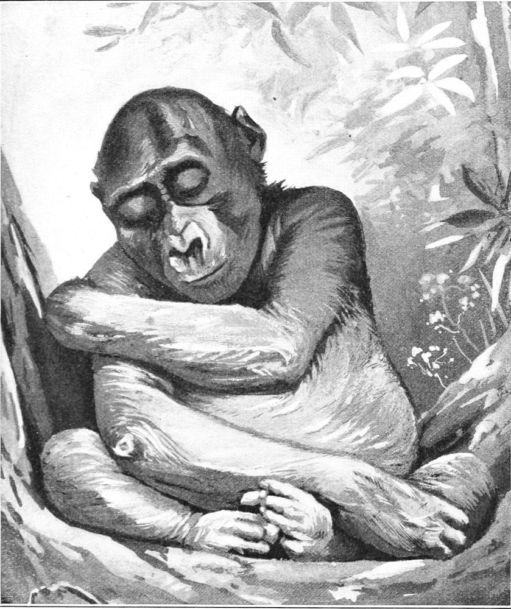

Habits of the Gorilla—Social Traits—Government—Justice—Mode of Attack—Screaming and Beating—Food
Studying the habits of the gorilla in a wild state is attended with much difficulty, but the results obtained during my sojourn of nearly four months among them in the forest are an ample reward for the efforts made. In captivity the habits of animals are made to conform in a measure to their surroundings, and since those are different from their natural environment, many of their habits differ in a like degree from the normal. Some are foregone, others modified, and new ones are acquired. Therefore, it is difficult to know exactly what the animal was in a state of nature.
In the social life of the gorilla there are certain things in which he differs from the chimpanzee, but there are others in which they closely resemble each other. From the native accounts of the modes of life of these two apes there would appear to be a much greater difference than a systematic study of them reveals. The native version of things frequently has a germ of truth which may serve as a clue to the facts in the case; and while we cannot safely rely upon all the details of the tales they relate, we forgive their mendacity and make use of the suggestions they furnish.
The gorilla is polygamous in habit, and he has an incipient idea of government. Within certain limits he has a faint perception of order and justice, if not of right and wrong. I do not mean to ascribe to him the highest attributes of man or to exalt him above the plane to which his faculties justly assign him; but there are reasons to justify the belief that he occupies a higher social and mental sphere than other animals, except the chimpanzee.
In the beginning of his career of independent life the young gorilla selects a wife with whom thereafter he appears to sustain the conjugal relation, and he maintains a certain degree of marital fidelity. From time to time he adopts a new wife, but does not discard the old one. In this manner he gathers around him a numerous family, consisting of his wives and children. Each mother nurses and cares for her own young, but all of them grow up together as the children of one family. The mother sometimes corrects and sometimes chastises her young. This presupposes some idea of propriety.
The father exercises the function of patriarch in the sense of a ruler, and the natives call him ikomba njina, which means “gorilla chief.” This term is derived from the third person singular of the verb kamba, “to speak”—i kamba, “he speaks.” Hence “spokesman,” or one that speaks for others. To him all the others show a certain amount of deference. Whether this is due to fear or respect is not certain; but here is at least the first principle of dignity.
The gorilla family of one adult male and a number of females and their young practically constitutes within itself a nation. There do not appear to be any social relations between different families, but within the same household there is apparent harmony. The gorilla is nomadic and rarely ever spends two nights in the same place. Each family roams about from place to place in the bush in search of food, and wherever they may be when night comes on, there they select a place to sleep.
The largest family of gorillas that I ever heard of was estimated to contain twenty members. The usual number is rarely ever more than ten or twelve. The chimpanzees appear to go in somewhat larger groups than these. Sometimes in a single group of chimpanzees as many as three, or even four, adult males have been seen. When the young gorilla approaches the adult state he leaves the family group, finds himself a mate, and sets out in the world for himself. I observe that, as a rule, when one gorilla is seen alone in the forest it is usually a young male about reaching the state of manhood. It is probable that he has then set out for himself, and that he is in search of a wife. When two only are seen together they usually prove to be a young male and a young female. It sometimes occurs that three adults are seen with two or three children. In large families are seen young ones of different ages, from one year old to five or six years old. The older children are always fewer in number than the younger ones. I have once seen a large female quite alone except for her babe. Whether she lived alone or was only temporarily absent from her family I had no means of ascertaining.
The gorilla chief does not provide food for his family. On the contrary, it is said that they provide for him. I have been informed, on two occasions and from different sources, that the gorilla chief has been seen sitting quietly eating under the shade of a tree while the others collected and brought to him his food. I have never myself witnessed such a scene, but it seems probable that the same story coming from two sources has some foundation of fact.
In the matter of government the gorilla appears to be somewhat more advanced than most animals. The chief leads the others on the march and selects their feeding grounds and their places to sleep. He breaks camp, and the others all obey him in these respects. Other gregarious animals do the same, but, in addition to these things, the gorillas from time to time hold a rude form of court, or council, in the jungle. It is said that the king presides on these occasions; that he sits alone in the center, while the others stand or sit in a semicircle about him and talk in an excited manner. Sometimes all of them are talking at once. Many of the natives claim to have witnessed these proceedings; but what they mean or allude to no native undertakes to say, except that there appears to be something of the nature of a quarrel. To what extent the chief gorilla exercises the judicial function is a matter of doubt, but there appears to be some real ground for the story.
As to the succession of the kingship there is no authoritative information as yet to be had; but from the meager data upon this point the belief is that on the death of the ikomba if there be an adult male he assumes the royal prerogative; otherwise the family disbands and eventually becomes absorbed by or attached to other families. Whether this new leader is elected in the manner in which other animals appoint a leader, or assumes it by reason of his age, cannot now be stated. There is no doubt that in many instances families remain intact for a long time after the death of their ikomba.
It has been stated by many writers that the gorilla builds a rude hut for himself and family. I have found no evidence that such is the fact. The natives declare that he does this, and some white men affirm the same. During my travels through the country of the gorilla I offered frequent and liberal rewards to any native who would show me a specimen of this simian architecture; but I was never able to find a trace of one made or occupied by any ape. Sometimes they take shelter from the tornadoes, but it is usually under some fallen tree or a cluster of broad leaves. There is absolutely nothing to indicate that they rearrange any part of tree or leaves. So far as I could find, there is absolutely no proof that any gorilla ever put two sticks together with the idea of building a shelter. As to his throwing sticks or stones at an enemy, there is nothing to verify it, but much to controvert it. It is a mere freak of fancy.
The current opinion that a gorilla will attack a man without being provoked to it is another popular error. He is shy and timid. He shrinks alike from man and from other large animals. When he is in a rage he is both fierce and powerful; but his ferocity and strength are rated above their value. In combat no doubt he is a stubborn foe, but no one I have ever met has seen him thus engaged. His mode of attack, as described by certain travelers, is a mere theory. It is said that in this act he walks erect, furiously beats upon his breast, roars, and yells. In this manner he first terrorizes and then seizes his adversary, tears open his breast and drinks the blood. I have never seen a large gorilla in the act of assault.
During my stay in the jungle I had a young gorilla in captivity. I made use of him in studying the habits of his race. I kept him tied with a long line which allowed him room to play or climb about in the bushes, and at the same time prevented him from escaping into the forest, as he always tried to do the instant he was released. I frequently released him for the purpose of watching his mode of attack when recaptured. While being pursued he rarely looked back, but when overtaken he invariably assailed his captor. This gave me an opportunity of seeing his method of attack. In this he displayed both skill and judgment. As my native boy approached him he calmly turned one side to the foe and, without facing the boy, rolled his eyes in such a manner as to see him and at the same time conceal his own purpose. When the boy came within reach, the gorilla grasped him by thrusting the arm to one side and obliquely backwards. When he had seized his adversary by the leg, he instantly swung the other arm around with a long sweep, so as to strike the boy a hard blow. Then he used his teeth. He seemed to depend more upon the blow than upon the grasp, but the latter served to hold the object of attack within reach. In every case he kept one arm and one leg in reserve until he had seized his adversary.
It is true that these attacks were made upon an enemy in pursuit, but his mode of doing this appeared to be natural to him. He struck a severe blow and showed no sign of tearing or scratching his opponent. In these attacks he made no sound. I do not say that other gorillas never scream or tear their victims, but I take it that the habits of the young are much, if not quite, the same as those of their elders; and from a study of this specimen I am forced to modify many opinions imbibed from reading or from pictures and museum specimens which I have seen. Many of them represent the gorilla in absurd and sometimes impossible attitudes. They certainly do not represent him as I have seen him in his native wilds. I had a young female gorilla as a subject for study for a short time. Her mode of attack was about the same as that just described, but she was too large to risk very far in such experiments.
When the chimpanzee attacks,—so far as I have seen among my own specimens,—he approaches his enemy and strikes with both hands, one slightly in advance of the other. After striking a few blows he grasps his opponent and uses his teeth. Then, shoving him away, he again uses the hands. Usually, on beginning the attack, he accompanies the assault with a loud, piercing scream. Neither he nor the gorilla closes the hand to strike or uses any weapon except the hands and the teeth.
I have read and heard descriptions of the sounds made by gorillas, but nothing ever conveyed to my mind an adequate idea of their real nature until I heard them myself within about a hundred feet of my cage in the dead of night. By some it has been called roaring, and by others howling; but it is neither a roar nor a howl. They utter a peculiar combination of sounds, beginning in a low, smooth tone, which rapidly increases in pitch and frequency, until it becomes a terrific scream. The first sound of the series and each alternate sound are made by expiration; the intermediate ones appear to be by inspiration. How this is accomplished it is difficult to say. The sound as a whole resembles the braying of an ass, except that the notes are shorter, the climax is higher, and the sound is louder. A gorilla does not yell in this manner every night, but when he does so it is usually between two and five o’clock in the morning. I have never heard the sound during the day nor in the early part of the night. When screaming he repeats the series from ten to twenty times, at intervals of one or two minutes apart. I know of nothing in the way of vocal sounds that can inspire such terror as the voice of the gorilla. It can be heard over a distance of three or four miles. I can assign no definite meaning to it unless it is intended to alarm some intruder.
One morning, between three and four o’clock, I heard two of them screaming at the same time. I do not mean at the same instant, but at intervals during the same period of time. One of them was within about a third of a mile of me, and the other in another direction, perhaps a mile away. The points we respectively occupied formed a scalene triangle. The sounds made by the two apes did not appear to have any reference to each other. Sometimes they would alternate, and at other times they would interrupt each other. They were both made by giants of their kind, and every leaf in the forest vibrated with the sound. This was during the latter part of May. They scream in this way from time to time throughout the year, but it is most frequent and violent during February and March.
This wild screaming is sometimes accompanied by a peculiar beating sound. It has been vaguely and variously described by travelers, and currently believed to be made by the animal beating with his hands upon his breast; but that is not the fact. The sound cannot be made by that means. The quality of the sound shows that such cannot be the means employed. I have several times heard this beating and have paid marked attention to its character. At a great distance it would be difficult to determine its exact quality.
On one occasion, while passing the night in a native town, I was aroused from sleep by a gorilla screaming and beating within a few hundred yards of the village. I drew on my boots, took my rifle, and cautiously crossed the open ground between the village and the forest. This brought me within about two hundred yards of the animal. The moon was faintly shining, but I could not see the beast, and I had no desire to approach nearer at such a time. I distinctly heard every stroke. I believe the sound was made by beating upon a log or piece of dead wood. He was beating with both hands. The alternating strokes were made with great rapidity. The order of the strokes was not unlike that produced by the natives in beating their drums, except that in this instance each hand made the same number of strokes, and the strokes were in a constant series, rising and falling from very soft to very loud, and vice versa. A number of these runs followed one another during the time the voice continued. Between the first and second strokes the interval was slightly longer than that between the second and third, and so on through the scale. As the beating increased in loudness the interval shortened in an inverse degree, while in descending the scale the intervals lengthened as the beating softened, and the author of the sound was conscious of the fact.
I could trace no relation in time or harmony between the sound of the voice and the beating, except that they began at the same time and ended at the same time. The same series of vocal sounds was repeated each time, beginning on the low note and ending in each case with the note of the highest pitch, while the rise and fall of the series of the beaten sounds were not measured by the duration of the voice. The series each time began with a soft note, but ended at any part of the scale at which it happened to be at the time the voice ceased. The coinciding notes were not the same in every case.
No doubt the gorilla sometimes beats upon his breast. He has been seen to do this in captivity, but the sounds described above were not so made. Since the gorilla makes these sounds only at night, it is not probable that any man ever saw him in the act. It does not require a delicate sense of hearing to distinguish a sound made by beating the breast from that made by beating on dead wood or other similar substance.
I have attributed the above sound to the gorilla, because I have been assured by many white men and scores of natives that it was made by him; but since my return from Africa I have had time to consider and digest certain facts tabulated on my first voyage, and, as a result of these reflections, I doubt whether this sound is made by the gorilla. There are reasons to believe that it is made by the chimpanzee.
I observed that my own chimpanzees made a sound exactly the same as that I heard in the forest, except that it was less in volume. This was due to the age of the apes that made it. I could induce them at any time to make the sound, and frequently did so in order to study it. After my arrival in New York I found that Chico—the big chimpanzee belonging to Mr. Bailey—frequently made the same sound. This he always did at night. The cry was said to be so loud and piercing that it fairly shook the stately walls of Madison Square Garden. From reading the description given by the late Professor Romanes of the sound made by “Sally” in the London Gardens, it appears that she made the same sound. It is well known to the natives that chimpanzees beat on some sonorous body, which the natives call a drum. In 1890 I called attention to the beating practiced by the two chimpanzees in the Cincinnati Gardens. They frequently indulged in beating with their knuckles upon the floor of their cage. This was done chiefly by the male. The late E. J. Glave described to me the same thing as being done by the chimpanzees in the middle Congo basin.
It is not probable that two animals of different genera utter the same exact sound, and this is more especially true of a sound that is complex or prolonged. Neither is it likely that the two would have a common habit, such as beating on any sonorous body. Since it is certain that one of these apes does make the sound described, it is more than probable that the other does not. The same logic applies to the beating. Many things that are known to the chimpanzee are taken for granted in the gorilla; but it is erroneous to suppose that in such habits as these they would be identical. In view of the facts I am inclined to believe the sounds described are made by the chimpanzee and not by the gorilla.
There is another case in which the gorilla is wrongly portrayed. The female gorilla is represented as carrying her young clinging to her waist. I have seen the mother in the forest, with her young mounted upon her back, its arms around her neck, and its feet hooked in her armpits. I have never seen the male carry the young, but in a number of specimens of advanced age I have seen and called attention to the mark upon the back and sides which indicates that he does this. It is in the same place that the young one rests upon the back of the mother. In form it is like an inverted Y, with the base resting on the neck and the prongs reaching under the arms. This mark is not one of nature. It is the imprint of something carried there. In some specimens the hair is worn off until the skin is almost bare. The prongs are more worn than the stem of the figure. This is due to the fact that the abrasion is greater upon those parts than elsewhere. I do not assert that such is the cause, but I do assert that such is the fact.
The gorilla is averse to human society. In captivity he is morose and sullen. He frets and pines for his liberty. His face appears to be incapable of expressing anything resembling a smile, but when in repose it is not repugnant. In anger his visage depicts the savage instincts of his nature. He does not seem to bear captivity well, even when not removed from his native climate. The longest any one of them has ever been known to live in captivity was about three and a half years. The one shown in the accompanying cut belonged to a trader by the name of Jones. The name of the gorilla was Sally, and I have called her Sally Jones. She lived with her master three years and a half and died of grief at his absence.

SALLY JONES (YOUNG GORILLA) CAUGHT NAPPING
(From a Photograph.)
The gorilla which lived with me for a time in the forest was a sober, solemn, stoical creature, and nothing could arouse in him a spirit of mirth. The only pastime he cared to indulge in was turning somersaults. Almost every day, at intervals of an hour or so, he would stand up for a moment, then put his head upon the ground, turn over, rise to his feet again, and look at me as if expecting my applause. His actions in this feat were very much like those of a boy. He frequently repeated this act a dozen times or more, but never smiled or evinced any sign of pleasure. He was selfish, cruel, vindictive, and retiring.
One peculiar habit of the gorilla, both wild and in captivity, is that of relaxing the lower lip when in repose. It is not done when the creature is in a sullen mood, but frequently, when perplexed or in a deep study, this occurs. Another habit is that of protruding the end of the tongue between the lips, until it is about even with the outer edge of them. The end of the tongue is somewhat more blunted than that of the human. This habit is so frequent with the young gorilla that it would appear to have some meaning; but I cannot suggest what it is.
In sleeping, the habit of the gorilla is to lie upon the back or side, with one or both arms placed under the head as a pillow. He cannot sleep on a perch,—as we have already noted,—but lies upon the ground at night. I had pointed out to me the place at the base of a large tree where a school of them had slept the night before. One imprint was quite distinct. The stories told about the king gorilla, or ikomba, placing his family in a tree while he sits on watch at the base is another case of supposition.
The food of the gorilla is not confined to plants and fruits. He is fond of meat and eats it either raw or cooked. He secures a supply of this kind of food by catching small rodents of various kinds, lizards, toads, etc. It is also well known that he robs the nests of birds, taking the eggs or the young. A native once pointed out to me the quills and bones of a porcupine which had been left by a gorilla who had eaten the carcass. It is not at all rare for them to do this. The fruits and plants upon which they chiefly live are acidulous in taste, and some of them are bitter. They often eat the fruit of the plantain, but they prefer the stalk of that plant; this they twist or break open and eat the succulent heart. They do the same with the batuna, which grows all through the forest. The fruit of this plant is a red pod filled with seeds imbedded in a soft pulp. It is slightly acid and astringent. The wild mangrove, which forms a staple article of food for the chimpanzee, is rarely if ever eaten by the gorilla. I once saw a gorilla try to seize a dog, but whether or not it was for the purpose of eating the flesh I cannot say. One, however, did catch and devour a small dog on board the steamer Nubia, while on a voyage home from Africa. Both animals belonged to Captain Button, and from him I learned of the incident. Gorillas have no fixed hours for eating, but they usually eat in the early morning or the late afternoon. In a few instances I have seen them refuse meat. They are perhaps less devoted to eating flesh than the chimpanzee is.
In the act of drinking, the gorilla takes a cup, places the rim in his mouth, and drinks in the same manner as a human being does. He does this without being taught, while the chimpanzee prefers to put both lips in the vessel. I have never known a gorilla that would drink beer, spirits, coffee, or soup. Their drink is limited to milk or water. The chimpanzee drinks beer and various other things.